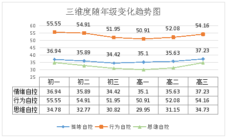
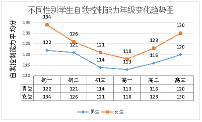
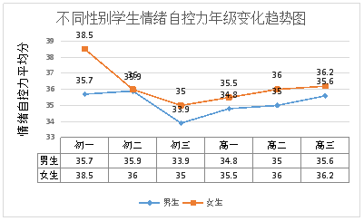
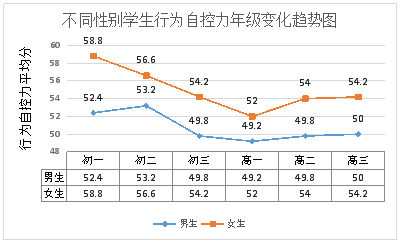
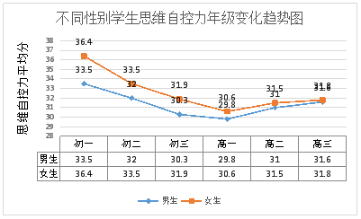

Evaluation Only. Created with Aspose.Words. Copyright 2003-2016 Aspose Pty Ltd.
中学阶段是人生发展的重要阶段，在这一阶段，个体的生理和心理都会发生重大变化，心理上，个体在认知、情感、行为等方面会经历一个发展不平衡的阶段。这时起，个体会面对成长带来的各种矛盾，心理上常体验到各种压力和冲突，容易出现情绪起伏波动，行为冲动、思想偏激等现象，能否从心理上顺利地，平安地度过这一非常的时期，关系到以后各种心理品质的最终形成。因此中学阶段是人生发展中具有重大意义的阶段，对以后的整个人生起着基石的作用。
而自我控制能力对中学生在这一时期，对自己心理、生理、行为的自主管理，有效掌握起着至关重要的作用。自我控制能力能直接影响中学生在学习、生活和社会交往等方面的发展，是中学生形成良好个性的必要条件和基本保证，对于他们成功地适应社会极为重要，而在不断发展的现代社会，独立学习、同周围人保持友好合作、具有良好个性等已成为对人才的基本要求。
（一）测评结果：
综合得分：116分 自我控制能力 一般 （满分：180分）
参数 | 自我控制力 | 思维自控力 | ||
测评结果 | 一般 | 弱 | 中 | 强 |
测评值 | 116 | 20 | 52 | 44 |
参考平均值 | 116 | 30 | 51 | 30 |
（二）参考平均值：
（以下内容模糊）



（下载完整报告 ￥5元）
（下载完整报告 ￥5元）
以上内容为本次测评全部内容，因测评环境及被测评人主观意识的影响会导致测评结果存在偏差，因此该测评结果仅供参考，不作为任何诊断性报告。
更多测评，请访问http://cp.youzy.cn（根据企业版网址自动变更）